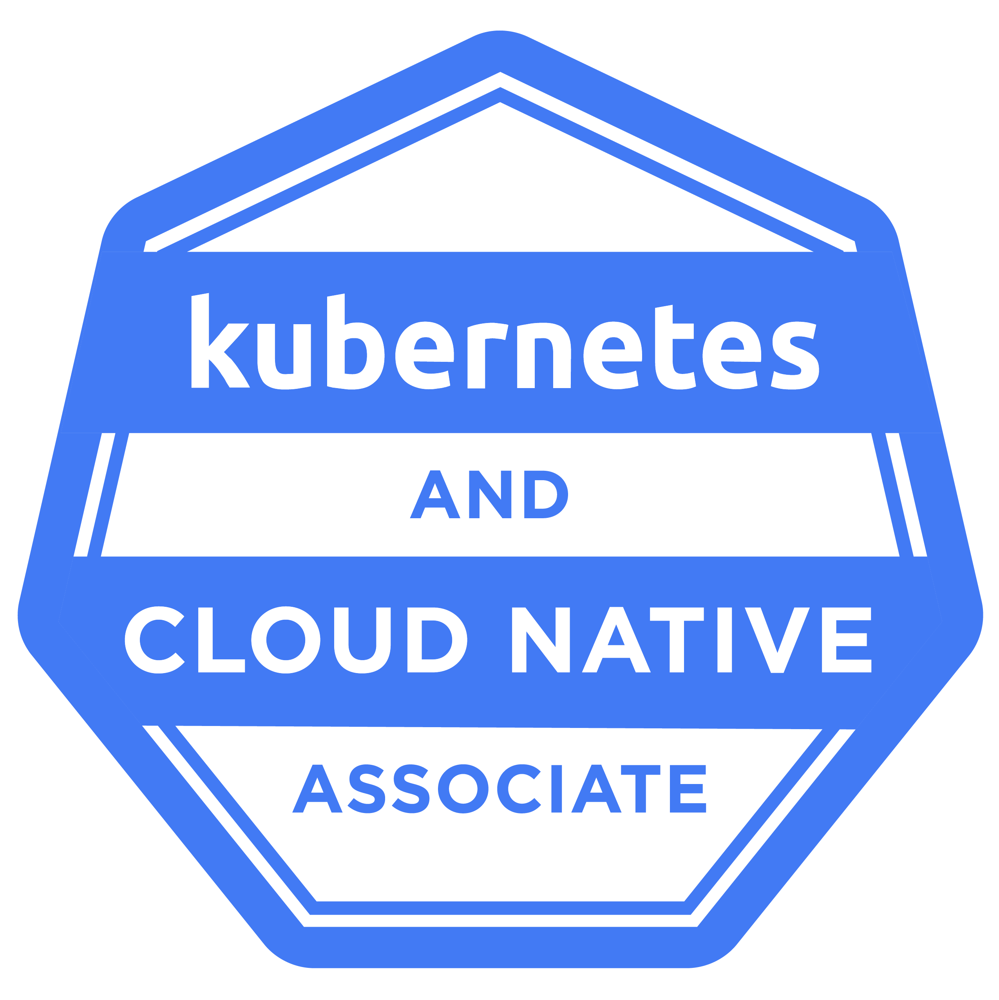
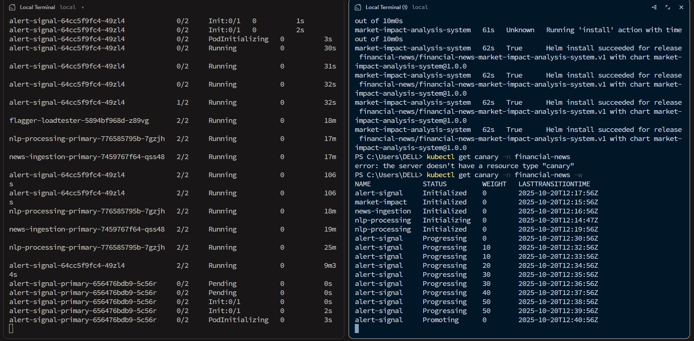
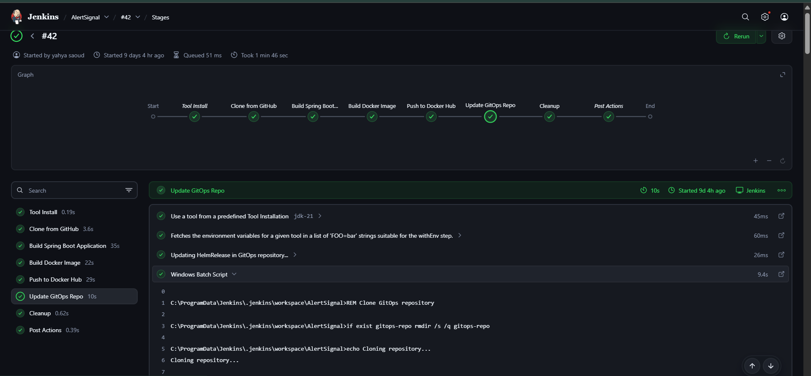
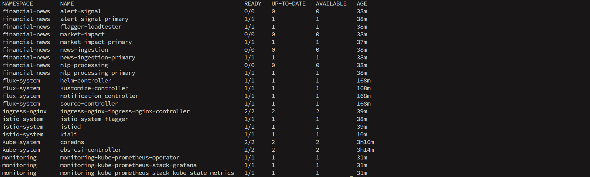
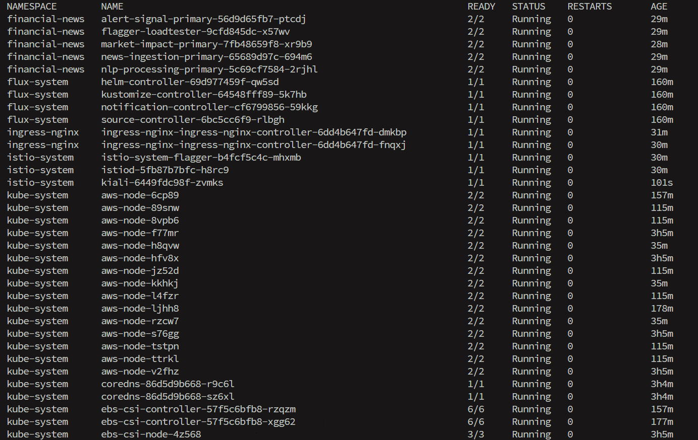
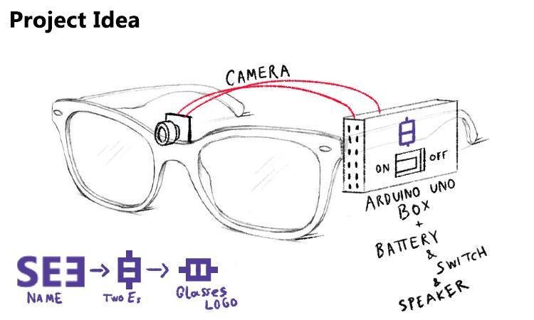
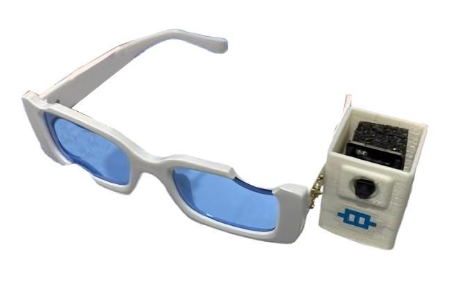
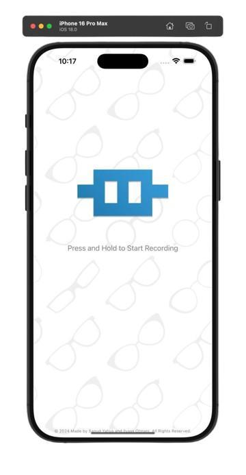

01 / Platform
Nexus Commerce
Eight microservices, one Istio mesh, one command from a laptop kind cluster to production EKS.
8services
70%fewer API calls
<200msresponse
MLOps & DevOps engineer, Casablanca. CKA and CKS certified. Open to work.
Portfolio 2026 / v3
I take machine learning out of notebooks and run it on Kubernetes.
$ kubectl get engineer saoud NAME READY STATUS FOCUS platform-eng 1/1 Running EKS, Terraform, ArgoCD mlops-platform 1/1 Running Airflow, MLflow, Ray ai-research 1/1 Running NLP, interpretability $
Platform engineer and MLOps practitioner, CKA and CKS certified, finishing a master's in AI. I build the AWS clusters, GitOps pipelines and observability that let models and microservices ship every day without anyone holding their breath.
Water4Future Hackathon, UNESCO & Cadi Ayyad University. First of 20+ teams.
Projects, each with its code, infrastructure or paper linked below.
Kubernetes and cloud credentials, including CKA and CKS from the Linux Foundation.
Research papers in 2025: self-supervised NER and Transformer scaling laws.

KCNAKubernetes and Cloud Native Associate, Linux Foundation KCSAKubernetes and Cloud Native Security Associate, Linux Foundation Cloud PractitionerAmazon Web ServicesSelected work
The full index of eleven follows.
01 — 03
01 / Platform
Eight microservices, one Istio mesh, one command from a laptop kind cluster to production EKS.

02 / Platform
Real-time financial news scored for sentiment and shipped as trading signals, with every release run as a Flagger canary.
03 / MLOps platform
A self-hosted ML platform on Kubernetes for UM6P researchers: Airflow, MLflow, MinIO, JupyterHub and Ray, reconciled by ArgoCD across seven namespaces.
Eleven projects. Open a row for the outcomes, the stack, the repositories and the screenshots. Hover to preview.
A self-hosted, on-premise machine learning platform for the College of Computing, built on Kubernetes and reconciled by ArgoCD across seven namespaces that cover the whole ML lifecycle: data pipelines, notebooks, experiment tracking, distributed training, model registry and serving. Everything a researcher needs, without a cloud bill.
Internal platform; no public repository.
A production-style MLOps pipeline on Azure Kubernetes Service that forecasts electricity demand. Airflow pulls fresh data from the EIA API every week, Pandera validates it before anything downstream sees it, MinIO stores it, and the training and forecasting steps run as Kubernetes jobs. More than 95% of the workflow needs no human touch.
Eight microservices in Java and Go talking over Kafka behind an Istio mesh, with a Next.js storefront and a React admin dashboard. Everything is declared in Terraform and Helm and reconciled by ArgoCD, so a deploy is a merged pull request and the whole environment stands up from one command.
Four services in Go and Java pull articles from RSS and NewsAPI, run a custom Naive Bayes sentiment model, and stream high-confidence signals to clients over WebSockets. FluxCD reconciles the cluster and Flagger runs every release as a canary against ten-plus quality gates before it takes real traffic.










Three Flask services, each wrapping a different model: an LSTM fake-news classifier, an S&P 500 prediction pipeline, and GPT-2 text generation. Each is containerised, deployed with kubectl, scaled independently and watched through Prometheus and Grafana, so "is the model still up and how fast is it answering?" has a dashboard instead of a guess.
A loyalty and rewards backend split into services behind a Spring Cloud API gateway. Eureka handles discovery and load balancing, RabbitMQ carries asynchronous work, Zipkin traces a request across every hop, and Jenkins builds and ships each service.
Named-entity recognition usually needs a large hand-annotated corpus per domain, which for biology literature runs to tens of thousands of dollars and months of expert time. This work learns animal entities and their relationships directly from unlabelled PDFs using contrastive objectives and an aggressive filtering stage, and outperforms a BERT baseline on the same task.
Sixteen configurations from 13.1M to 597.3M parameters, comparing how dense and sparsely-activated architectures scale, then sparse autoencoders to look at what the models learned. The two families scale with opposite-signed coefficients, and Switch-Large reached the best perplexity of the study.
Glasses with a camera, a phone app, and a containerised backend for visually impaired users. YOLOv9 detects objects, a ViT-GPT2 model captions the scene, Whisper transcribes the wearer's questions, and the answer comes back as speech. Recognised with accessibility innovation awards.



Takes an ordinary drone video, estimates a depth map for each frame with MiDaS, recovers the camera's path, and blends the frames into a navigable 3D terrain in the browser. Draw a flight path over the terrain, adjust its height and angle, and fly it in first-person or follow mode.


A content generation system where a graph of agents decides what to retrieve, when to retrieve more, and when to answer. Retrieval runs against a vector database, orchestration lives in LangGraph, and the whole thing ships as containers so it scales horizontally.
Three internships, most recently building an MLOps platform at UM6P, and a master's in AI in Marrakech ranked 3rd in class.
UM6P College of Computing
Ben Guerir. Designed and deployed the on-prem MLOps platform described above.
Country-tech
Casablanca. Five-microservice system on Spring Boot, RabbitMQ and Node.js with Eureka, JWT auth, a React frontend, Jenkins CI/CD, Docker and Zipkin tracing; deployment time cut from hours to minutes.
Soread 2M
Casablanca. Full-stack web (PHP, Laravel, MySQL) and React Native app for IT equipment management, improving efficiency by 30%.
Semlalia Faculty of Sciences, Marrakech
Ranked 3rd in class. Research in mechanistic interpretability of neural networks.
Network architecture, system administration, software engineering and databases.
Higher School of Technology, Safi
System design and software development.
Hiring for MLOps, DevOps or platform engineering? I reply within a day.